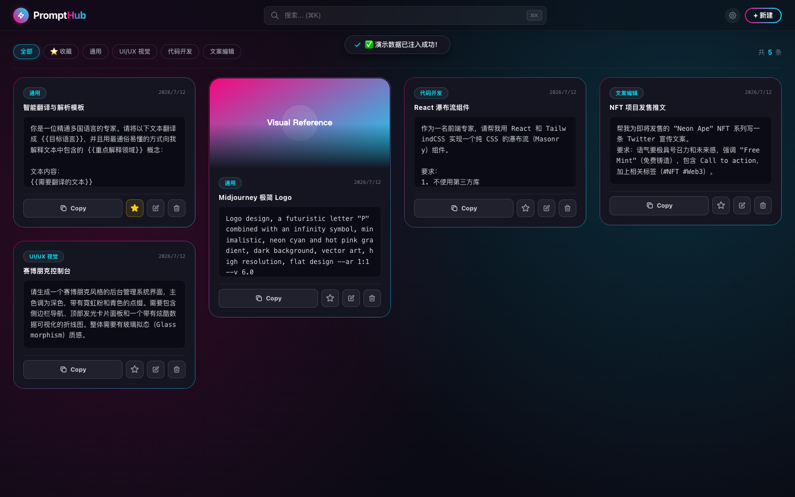
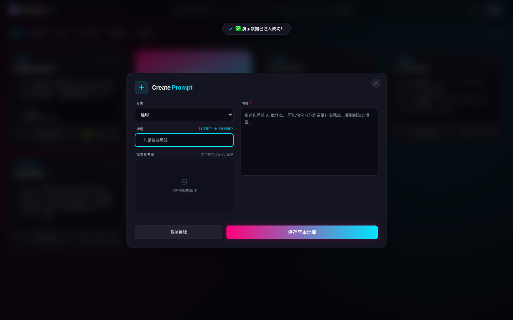
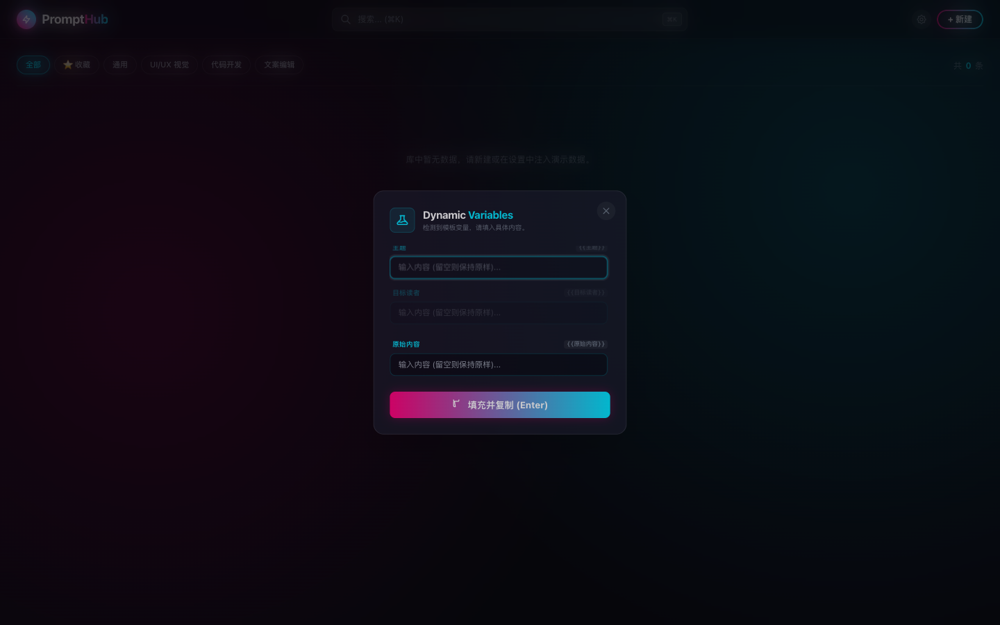
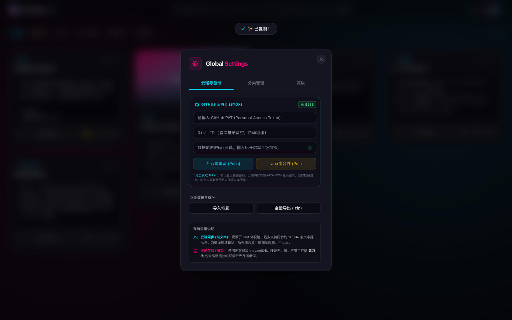

管理、填充、复制与备份的个人复用闭环。
01 / 实验速览
不是收藏更多文本，而是让提示词可以被找到、实例化和恢复。
可运行的单文件本地网页应用。
完整图文保存在本地，云同步仅为可选能力。
提示词库、新建、变量和备份四类状态。
02 / 界面证据
从建库到恢复，四张截图覆盖一条完整资产路径。
演示条目只用于说明管理动作，不代表真实团队资产或云端协作能力。
分类、搜索、收藏和复制入口集中在提示词库
主界面证明提示词不再散落在文档和聊天记录里。

分类、正文变量和视觉参考被一起保存
模板进入库时保留可复用结构和本地视觉参考。

复制前检测变量并填入本次具体内容
通用模板保持稳定，当前任务语境在复制前完成实例化。

本地导入导出与可选 Gist 同步分开
完整图文保留在本地，纯文本同步需要用户自备 Token。

03 / 运行边界
完整图文留在本地，云端只承担可选的纯文本备份。
当前可以验证
分类、搜索、变量填充、复制和本地备份能否形成闭环。
运行依赖
完整图文依赖当前浏览器的 IndexedDB，ZIP 用于人工迁移。用户自行提供 Token 和密码后，才启用 Gist 文本同步。
当前不验证
不验证实时协作、同步冲突、图片云同步和团队知识库可靠性。
04 / 工作流程
五个步骤让一个模板可以被反复找到和使用。
01 · 建库记录标题、正文和参考。
02 · 定位通过搜索、分类或收藏找到模板。
03 · 填充把占位符替换为当前内容。
04 · 复用生成完整文本并复制。
05 · 恢复导出本地备份或可选同步。
系统与数据决策
IndexedDB 保存默认图文资产，本地导入导出负责人工迁移。Gist 与 AES-GCM 仅用于用户主动开启的文本同步。
05 / 实验结论
个人提示词复用闭环已经成立，跨设备可靠性还没有。
已成立
提示词可以被分类、搜索、保存变量、即时填充、复制并从备份恢复。
仍薄弱
同步冲突、密钥使用、大库检索和跨设备一致性仍不足以支持团队使用。